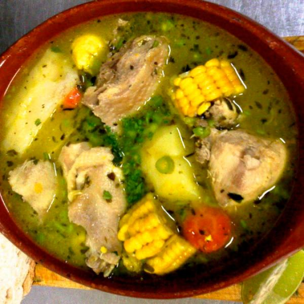

Sopa de Pollo

Para acompañar todas las comidas
Este sancochito ayuda hasta con el mal de amores
Ingredientes
- Mazorca
- Cebolla
- Ajo
- Una pastilla de caldo
- Apio
- Cilantro
- 2 muslos y contramuslos de pollo
- Sal
- Papa
- Zanahoria (opcional)
Pasos Para Hacer el Sancocho
- Se coloca el pollo en la olla con media taza de agua
- Se ralla una cebolla encima del pollo
- Se coloca el apio picado encima del pollo
- Se machaca ajo y se coloca encima del pollo
- Se dispersa la pastilla de caldo
- Se coloca a fuego medio para que el pollo agarre el sabor
- Luego de 6 minutos agarrando sabor, se coloca más agua y un poco de sal
- Se coloca la papa picada y la mazorca, así como la zanahoria en caso de querer
- Se espera media hora a 45 minutos y se revisa de sal
Return to home